01 / Origem
O plástico deixa de ser descarte.
Cooperativas separam, organizam e valorizam o resíduo pós-consumo. É aqui que a circularidade começa: com pessoas, renda e matéria recuperada.

Transformamos plástico pós-consumo e coprodutos minerais em materiais circulares de alto desempenho para arquitetura, infraestrutura e cidades.
Conheça nossos produtosConheça nossos produtos


50% + 50%Plástico pós-consumo + coproduto mineral na composição-base
Sobre a VIRA
A VIRA é uma indústria de materiais circulares que transforma resíduos plásticos e coprodutos minerais em componentes de alto desempenho. Unimos engenharia de materiais, produção industrial e rastreabilidade para criar materiais duráveis, especificáveis e capazes de permanecer em circulação.
Cooperativas separam, organizam e valorizam o resíduo pós-consumo. É aqui que a circularidade começa: com pessoas, renda e matéria recuperada.

O coproduto mineral da siderurgia é selecionado, caracterizado e preparado para retornar à cadeia produtiva com controle técnico.

Na recepção, cada carga é pesada, documentada e identificada por lote. Origem e qualidade acompanham a matéria durante todo o processo.

Preparação, formulação, calor e pressão transformam os materiais em pavers — com desempenho validado por configuração e aplicação.
Base técnica
Publicamos números técnicos somente quando associados à configuração, ao ensaio ou à metodologia correspondente.
Composição-base
50/50Rastreabilidade
LOTEMatriz energética
SOLARDocumentação
ENSAIONossos produtos
Uma família de produtos para pavimentação e infraestrutura urbana, desenvolvida com controle industrial e matéria recuperada.
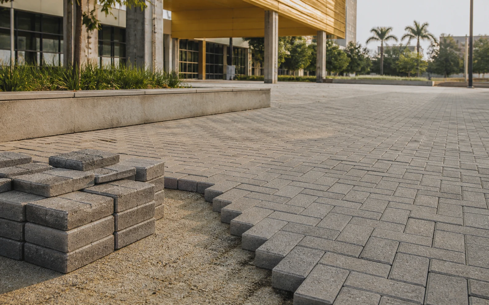
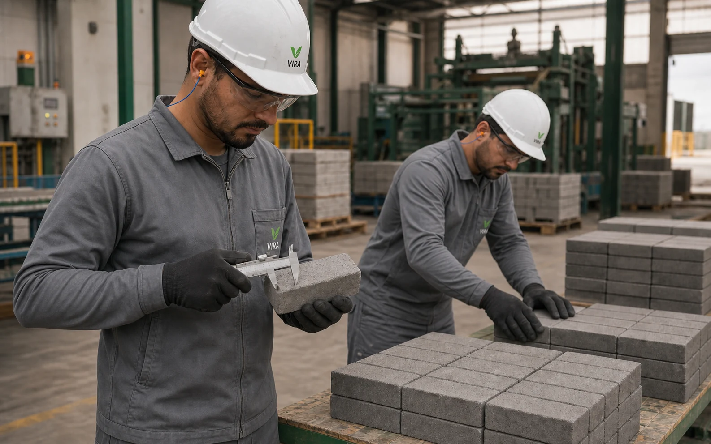
Produto em destaque · PavimentaçãoPara calçadas, praças, áreas públicas e projetos urbanos.
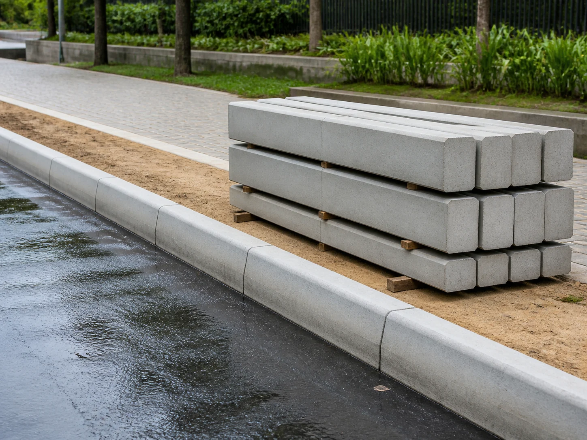
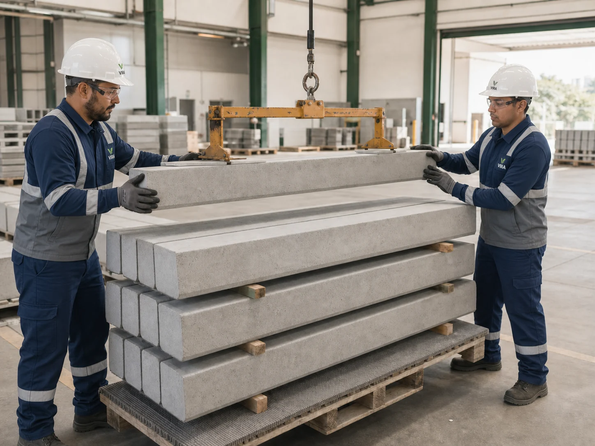
Infraestrutura urbanaDelimitação, transição e organização de vias e passeios.
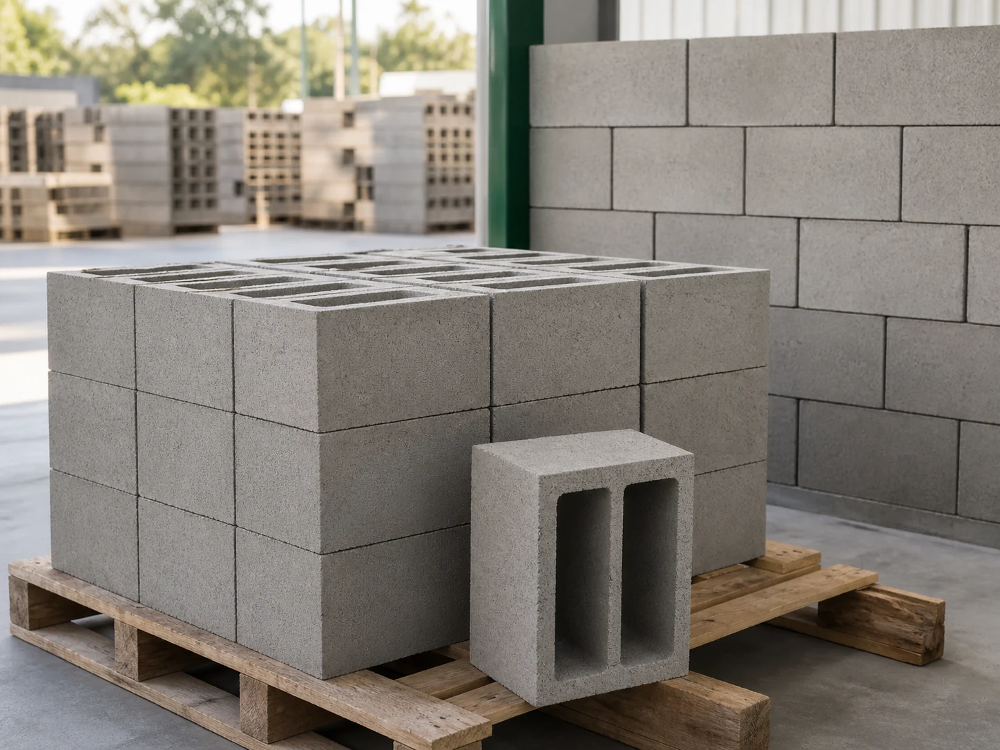
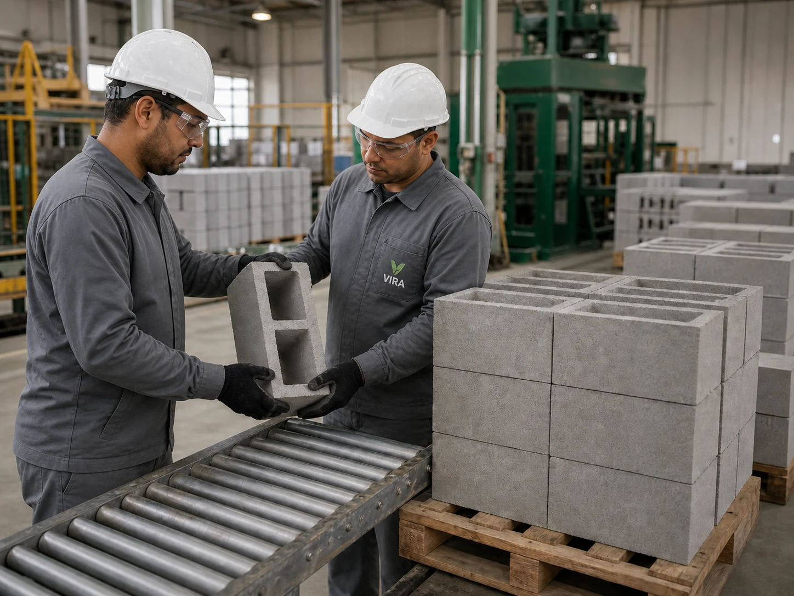
ConstruçãoSoluções modulares para diferentes necessidades construtivas.
Documentação
Estados documentais organizados por família, sem downloads simulados.
Abrir Central Técnica →Rastreabilidade
Veja como lote, composição, configuração e documentos poderão permanecer conectados.
Conhecer Passaporte →Paver VIRA · desempenho documentável
As referências abaixo pertencem ao Paver VIRA e são apresentadas com a configuração correspondente; demais atributos permanecem em validação.
07 atributos50% plástico pós-consumo reciclado e 50% escória, em massa, na composição-base.
Referência de 0,2–0,3%, conforme configuração ensaiada e documentação técnica aplicável.
Referência de 20–25 N/mm² para a configuração de 40 mm.
Referência de 25–30 N/mm² para a configuração de 50 mm.
Geometria de pavimentação destinada a projetos urbanos conforme paginação e especificação.
Indicadores climáticos serão publicados somente com metodologia, fatores e fronteiras documentados.
Estrutura de passaporte digital em desenvolvimento para conectar origem, composição e documentação.
Expertise industrial
Três competências conectam a matéria recuperada a produtos consistentes, verificáveis e prontos para permanecer nas cidades.
Calor, pressão e formulação trabalham juntos para converter materiais recuperados em componentes moldados para aplicações urbanas.
Triagem, descontaminação e redução controlada preparam uma matéria-prima homogênea, rastreável e adequada à formulação técnica.
Em desenvolvimento, o passaporte conecta origem, composição, produção e documentação em um registro associado ao lote.
Calculadora de matéria
Dimensione a área e visualize a matéria recuperada. Cada produto VIRA combina, em massa, 50% plástico pós-consumo e 50% escória industrial.
50% polímeros recuperados50% coproduto mineral
estimativa sobre a composição-base
estimativa sobre a composição-base
massa total estimada
aguardando metodologia documentada
— AGENDA 2030
A atuação da VIRA se conecta a seis Objetivos de Desenvolvimento Sustentável — da valorização do trabalho à transformação das cidades.
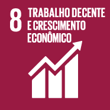
Renda e fortalecimento da cadeia de reciclagem.
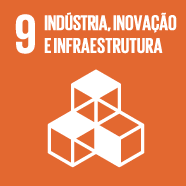
Tecnologia industrial aplicada à circularidade.
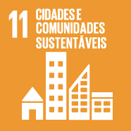
Materiais para espaços urbanos mais resilientes.
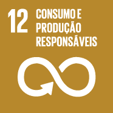
Resíduos mantidos em circulação produtiva.
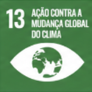
Potencial de redução de pressão sobre recursos e emissões, sujeito à metodologia aplicável.
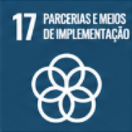
Cooperativas, indústria e cidades conectadas.
— IMPACTO
Mais que materiais, geramos oportunidades. Fortalecemos cooperativas, valorizamos catadores e impulsionamos uma economia circular que inclui pessoas e transforma cidades.
— RECICLAGEM QUE INCLUI. CIDADES QUE AVANÇAM.
— PROCESSO
Transformamos resíduos em soluções reais para cidades mais justas, sustentáveis e resilientes. Conheça cada etapa da nossa cadeia de valor, da coleta ao produto final.
RESÍDUOS
HOJE.
CIDADES
AMANHÃ.
Trabalhamos com cooperativas e catadores, garantindo renda e dignidade.
Os materiais são separados e preparados para processamento.
Transformamos plásticos e escória em novos materiais de alta performance.
Pavers, blocos e guias com qualidade, durabilidade e baixo impacto ambiental.
Infraestrutura sustentável para um futuro melhor para todos.
O VIRA é uma iniciativa pioneira de economia circular que transforma plástico pós-consumo e coprodutos minerais em materiais de alto desempenho para arquitetura, pavimentação e infraestrutura urbana, conectando cooperativas, indústria e cidades.
O VIRA é produzido com 50% de plástico reciclado e 50% de escória, utilizando tecnologia de prensagem que transforma resíduos em blocos, pavers e guias de alta resistência, durabilidade e baixo impacto ambiental.
Tecnologia a serviço de um futuro mais justo e sustentável.
O Paver VIRA atinge resistências ensaiadas de 20 a 30 N/mm² conforme a configuração de espessura (40 mm ou 50 mm), atendendo plenamente aos requisitos normativos para tráfego de pedestres, ciclovias e passeios públicos.
A linha atual é composta por pavers intertravados, blocos modulares e guias/meio-fio de concreto circular. Projetos sob medida e geometrias especiais são avaliados sob consulta técnica.
Cada metro quadrado de pavimento incorpora 9,25 kg de materiais recuperados, desviando plástico dos aterros e reaproveitando coprodutos minerais, além de promover menor pressão sobre recursos virgens e emissões validadas.
Trabalhamos diretamente com cooperativas de catadores locais, garantindo compra justa, rastreabilidade na cadeia de suprimentos e remuneração digna para os trabalhadores da reciclagem.
Com produção e desenvolvimento sediados no Polo Industrial de Caruaru, Pernambuco, nossos materiais já integram projetos de infraestrutura e urbanismo sustentável na região, com planejamento de expansão para todo o território nacional.
Fale com nosso time. Estamos prontos para ajudar.
Contato e especificação
Conte sobre a aplicação, a metragem e o estágio do projeto. Nossa equipe técnica retorna com caminhos de especificação.